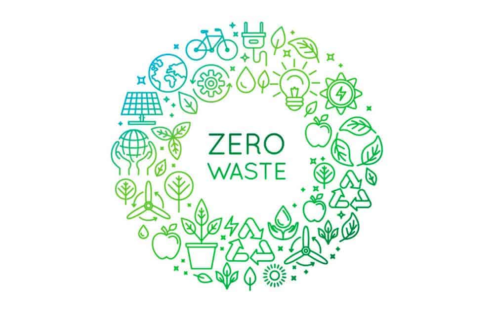

Viviendo sin residuos: Guía para principiantes
Adoptar un estilo de vida sin residuos puede parecer un gran desafío, pero todo comienza con pequeños cambios. La filosofía "zero waste" busca reducir al máximo la basura que generamos, priorizando la reutilización y la sostenibilidad.
1. Evalúa tus hábitos
Durante una semana, observa los residuos que generas. ¿Podrías evitarlos? ¿Puedes reutilizarlos? Este paso es clave para empezar con conciencia.
2. Elimina los desechables
Sustituye productos de un solo uso por opciones reutilizables: botellas, bolsas de tela, cubiertos metálicos, etc.
3. Compra a granel
Evita envases innecesarios llevando tus propios recipientes a tiendas que vendan productos a granel.
4. Haz tus propios productos
Desde limpiadores caseros hasta cosméticos naturales, hay muchas formas de reducir envases creando tus propios productos.
Recuerda: no se trata de ser perfecto, sino de avanzar con compromiso. Cada pequeño gesto cuenta para construir un planeta más limpio y justo.